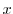
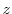

This command translates the MODEL so that its gravity center is at the origin of the coordinate system and that the three principal axes of the model's inertia ellipsoid correspond to the  , , and  axes of the coordinate system. It may even be used for approximate superposition if molecules have a similar non-spherical shape. Information about the principal axes is written to the log file.
On successful completion, an OrientData object is returned; for instance, if you save this in a variable 'r', the following data are available:
# Example for: model.orient() # This will orient the model along the principal axes of the inertia ellipsoid: from modeller import * env = environ() env.io.atom_files_directory = ['../atom_files'] mdl = model(env) mdl.read(file='1fas') r = mdl.orient() mdl.write(file='1fas.ini') print "Translation: ", r.translation